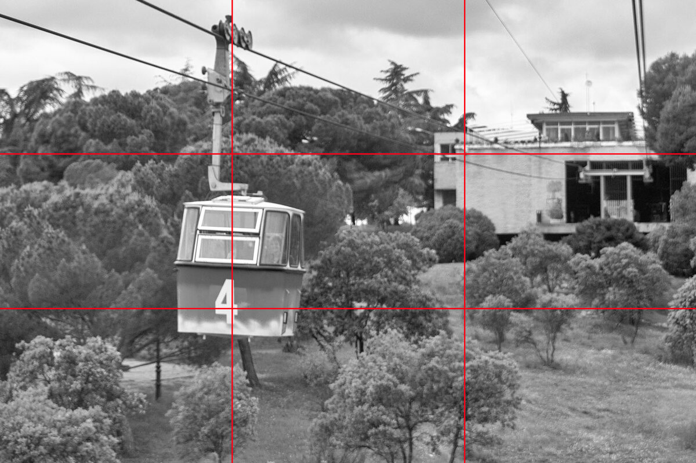
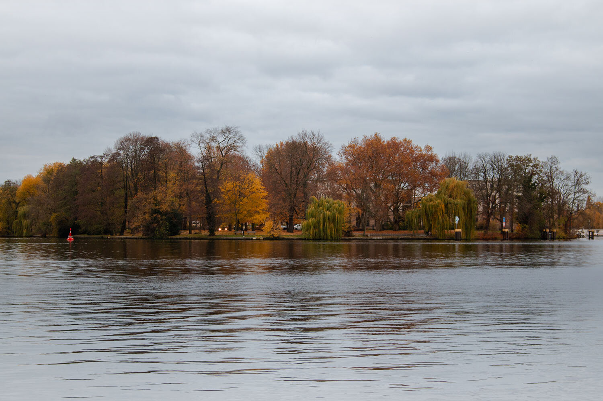
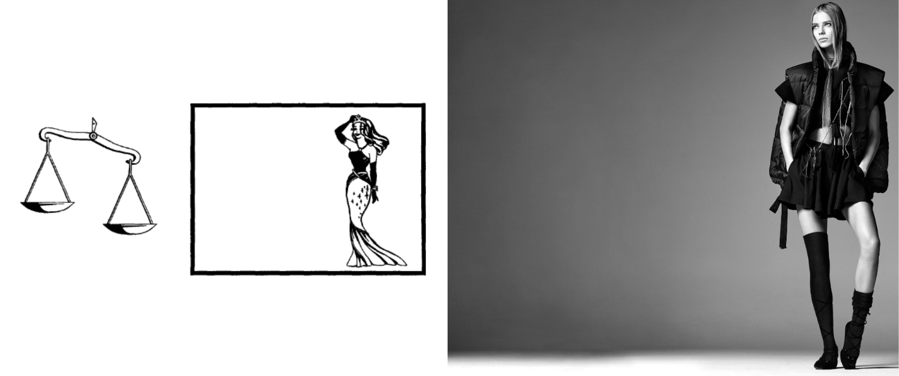

Экспозиция — это значение количества света, которое попадает на датчик изображения камеры и определяет, насколько светлыми или темными выглядят снимки. Ею можно управлять с помощью значений выдержки, диафрагмы и ISO. Изменение одного из этих значений влияет не только на экспозицию, но и на общий вид фотографии. Обычно фотоаппарат в автоматический режиме справляется с получением экспозиции. Как было сказано выше, параметры, влияющие на экспозицию (ISO, значение диафрагмы и выдержка), также влияют и на общий вид фотографии, из-за этого фотографируя в автоматическом режиме, не всегда получается добиться ожидаемого результата. Поэтому лучше фотографировать в ручном режиме, обычно он обозначается буквой M (Manual). Это не так сложно, как это кажется на первый взгляд, особенно если в фотоаппарате стоит экспонометр. Экспомнометр - фотометрическое устройство для инструментального измерения яркости или освещённости снимаемых объектов при вычислении корректной фотографической экспозиции.
ISO
ISO регулирует количество света, которое пропускает камера, и оказывает значительное влияние на темные или светлые области на фотографиях — все это можно настроить в соответствии с техническими или художественными соображениями. Шкала ISO обычно начинается со значения 100, а каждое следующее значение изменяется в два раза, до границы возможностей камеры: 100, 200, 400, 800, 1600… Начальная и конечная точки диапазона зависят от камеры, которую вы используете. ISO определяет изменение экспозиции фотографии при изменении чувствительности сенсора.Уменьшение ISO соответствует уменьшение экспозиции, увеличение – даст более сильное воздействие света, экспозиция увеличится. Гораздо проще, чем диафрагма. Ниже приводится 6 фото для различных значений ISO: 100, 200, 400, 800, 1600, 3200. Диафрагма и выдержка остаются постоянными на всех фото, изменяется только ISO. Таким образом вы можете видеть влияние этого параметра на фотографию. идеальная экспозиция показана на четвертом фото, где ISO составляет 800.
Как правило, чем меньше ISO, тем выше качество изображения. При увеличение ISO также увеличивается цифровой шум. Этот шум снижает детализацию фотографии, делая изображение зернистым и неравномерным.
Существуют специальные программы. которые удаляют шум. Они могут исправить ситуацию, но ценой некоторого снижения детализации и сглаживания мелких деталей, которые смешиваются с шумом
Диафрагма
Лучший способ понять, что такое диафрагма – представить ее как зрачок глаза. Чем шире открыт зрачок, тем больше света попадает на сетчатку.
Диаметр диафрагмы регулирует количество света, поступающего к матрице, в зависимости от ситуации. Есть различные творческие варианты использования диафрагмы, но когда речь идет о свете, важно запомнить, что более широкие отверстия пропускают больше света, а более узкие меньше.
Диафрагма определяется с помощью так называемой шкалы диафрагм. На дисплее вашей камеры вы можете увидеть F/число. Число означает, насколько широкая диафрагма, что, в свою очередь, определяет экспозицию и глубину резкости. Чем меньше число, тем шире отверстие. Это может сначала вызвать путаницу – почему малое число соответствует большей светосиле? Ответ прост и лежит в плоскости математики, но сначала вы должны узнать, что такое диафрагменный ряд или стандартная шкала диафрагм.
Диафрагменный ряд: f/1.4, f/2, f/2.8, f/4.5, f/5.6, f/6.3, f/7.1, f/11, f/16, f/22
Главное, что нужно знать об этих числах – то, что между этими значениями одна ступень экспозиции, то есть при переходе от меньшего значения к большему в объектив будет попадать в два раза меньше света. В современных камерах есть также и промежуточные значения диафрагмы, позволяющие более точно настроить экспозицию. Шаг настройки в этом случае равен ½ или 1/3 ступени. К примеру, между значениями f/2.8 и f/4 будут лежать значения f/3.2 и f/3.5.
Диафрагма и глубина резкости
ГРИП (Глубины резко изображаемого пространства) – сама по себе обширная тема. Чтобы раскрыть ее, нужно несколько десятков страниц, но сейчас мы рассмотрим ее очень кратко. Речь идет о расстоянии, которое будет передаваться резко спереди и сзади объекта съемки. Все, что вам действительно нужно знать, с точки зрения взаимосвязи диафрагмы и глубины резкости, это то, что чем шире диафрагма (f/1.4) тем меньше глубина резкости, а чем уже диафрагма (f/22), тем поле резкости больше. Прежде, чем я покажу вам подборку фотографий, сделанных с разной диафрагмой, посмотрите на диаграмму ниже.
Наконец подборка фотографий, сделанных в приоритете диафрагмы, таким образом экспозиция остается постоянной, а меняется только диафрагма. Диафрагменный ряд такой же, как в предыдущем слайд-шоу. Обратите внимание, как меняется глубина резкости при изменении диафрагмы.
Выдержка
Выдержка – это время, на которое открывается затвор. Если вы будете использовать выдержку длиннее определенной, то получите размытые снимки в большинстве случаев. Выдержка управляет "стопами" экспозиции также как диафрагма, только намного проще. так как зависимость в этом случае прямо пропорциональная. К примеру, чтобы уменьшить экспозицию наполовину, нужно укоротить выдержку вдвое, допустим, с 1/200 до 1/400 секунды.
При условии, что вы не делаете размытые фотографии для творческого эффекта, вам нужно будет выбрать достаточно короткую выдержку (высокую скорость затвора), чтобы предотвратить размытость изображения. Смазывание также зависит от фокусного расстояния объектива. Для телеобъектива требуется более короткая выдержка, поскольку даже малейшее движение камеры будет усилено объективом. Широкоугольный объектив может работать с более длинными выдержками.
Как правило, средний человек может сделать резкий, без смазывания, снимок, если установить выдержку, обратную фокусному расстоянию. Например, чтобы сделать снимок на фокусном расстоянии 30 мм, нужно установить выдержку не длиннее 1/30 сек. Если она будет длиннее. то вероятность получить размытое или смазанное изображение значительно возрастет. Однако, стоит отметить, что это относится к полнокадровой камере. если сенсор камеры меньше, то выдержку следует укоротить на коэффициент кроп-фактора. Например, для кроп-фактора 1,5 выдержка будет 1/45 с.
Есть и исключения из правил, например, если объектив имеет систему стабилизации изображения, которая позволяет использовать гораздо более длинные выдержки. Когда вы научитесь обращаться со своей камерой, будете постепенно улучшать свои навыки, такие как умение правильно держать камеру в разных ситуациях, то сможете делать резкие снимки и на более длинных выдержках.
С помощью удаленного управления спуском затвора и штатива, чтобы удерживать камеру неподвижно, вы можете поиграть со скоростью затвора и создать интересные образы с размытием, нестандартные фотографии.

Источник:https://photo-monster.ru/books/read/4-shaga-k-ponimaniyu-vyiderjki.html
Под композицией в фотографии понимается расположение объектов в кадре и их взаимодействие между собой. Таким образом композиция отвечает за визуальную структуру конечного изображения.
Правило третей
Правило третей предполагает, что основные элементы, которые попадают в кадр, будут располагаться на указанных выше линиях. Это означает, что фокус взгляда зрителя максимален в линиях пересечения, а равно ключевые объекты на фотографии должны попадать на одну из четырёх точек на пересекающихся линиях. Таким образом, перестаньте помещать ключевой объект съёмки точно по центру, а смешайте его вдоль линий третей. Вы тут же увидите как Ваши фотографии моментально повышают качество визуального восприятия.
Предупреждение: правило третей можно нарушать, если в композиции применяется симметрия или золотое сечение. Об этом пойдёт речь ниже.
Ведущие линии
Под ведущими линиями в фотографии понимают виртуальные линии, которые направляют взгляд зрителя к заранее определённому объекту.
Чаще всего ведущие линии образовываются при помощи перспективных искажений, если съёмка производилась внутри помещений. В таком случае линии очевидно проявляются вдоль стен. В пейзажной фотосъёмке ведущие линии образовывают рельефом, а также дорожками и тропинками, как на примере выше.
Симметрия
Данный композиционный приём предполагает, что по несмежным краям кадра будут находиться одинаковые изображения. Обратите внимание, что 100% симметрия редко когда возникает, то есть она всегда приблизительная, как на снимке ниже.
Другим хорошим примером правильного использования симметрии является классический портрет. В таком случае половинки лица (и туловища) человека будут уравновешивать композицию и придавать снимку симметричность. Применение симметрии качественно преображает фотографии, потому что восприятие человека нацелено на порядок и чёткость. Попробуйте поискать симметрию в узорах и отражениях. Тогда Вы поймёте как симметрия влияет на чувства зрителя.
Золотая сетка
Она очень похожа на сетку из правила третей, но подчиняется пропорции 1,618. Это означает, что линии золотой сетки проходят ближе к центру со всеми вытекающими.
Золотая сетка выглядит более естественно, чем обычные линии в правиле третей, потому что глаз лучше реагирует на математическую пропорцию, а не на абстрактное видение фотографа. Так что если Вы хорошо освоили правило третей, смело переходите на золотую сетку. В результате Вы получите более качественные снимки при похожей технике фотосъёмки.
Золотая спираль
При использовании компоновки по правилу золотой спирали необходимо выбрать исходную точку, а всю композицию построить вокруг мнимой разворачивающейся спирали.
Легче всего золотую спираль увидеть в природных объектах – цветах, шишках, ракушках, а также классических архитектурных решениях, поскольку в предметах старины всецело используется золотое сечение.
Контраст
Если Вы снимаете яркие предметы в темноте, то некоторые детали будут особенно отчётливо выделятся. Это, несомненно, улучшит композицию снимка. Выше приведён классический пример яркостного контраста. Не забывайте, что возможно применение цветового контраста, а также концептуального контраста (вариант, когда присутствует идейное противопоставление).
Правило нечётных объектов
Оно гласит, что на нечётном количестве людей, предметов пользователю легче сосредоточиться. А вот если их 2, 4 и т. д., то они отвлекают внимание и выглядят даже иногда раздражающе.
Равновесие
На снимке можно разными способами создавать акценты. Например, крупные объекты визуально «утяжелят» область.
На рисунке наглядный пример неуравновешенной композиции. Большой объект находится в правой стороне, из-за чего композиция несбалансированная и визуально «тяжёлая» с одной стороны. Стоит ли использовать такой приём и может ли он быть достоинством, а не недостатком? Да. Например, в фэшн фотографии, чтобы показать экстравагантность, эпатажность и однозначно притянуть внимание зрителя к участку кадра. Фото: alimentola.info
Как проще всего уравновесить кадр? Поставить объект съёмки по центру. В этом случае не всегда будет соблюдаться правило третей. Например, если модель стоит далеко и не может дотянуться до заветных линий и точек их пересечения. В этом случае можно:
добавить в кадр элементы, которые будут расположены на линиях или их точках пересечения. Но в этом случае есть риск отвлечь внимание от самой модели;
пересмотреть размещение модели в кадре. Например, поставить её ближе;
обыграть подачу, нарушив эту композиционную основу.
Второй способ уравновесить снимок — расположить в другой части кадра ещё один объект. Важно: цвет помогает нам изменить визуальный вес предмета. Более тяжёлые: яркие, красный и его оттенки. Лёгкие: пастельные, полупрозрачные. Чёрный и другие очень тёмные чаще выглядят «легче» ярких красных, бордовых (им проще слиться с фоном). Уравновесить композицию из двух фигур можно движениями. Пример: одна модель подняла левую руку, а вторая — правую.
.png)
Если человек идёт в сторону, а перед ним нет пространства, снимок выглядит странно и вызывает дискомфорт. Особенно если за движущимся человеком есть свободное пространство. Если делаем акцент на взгляде или движении в сторону, перед лицом нужно оставить пространство. Чем больше динамики, движения (или агрессии) нужно показать, тем больше места оставляем.
.png)
Ещё одна неуравновешенная схема (рис. 1), которую исправили на 2 рисунке. Перед лицом модели не было свободного пространства. Создавалось впечатление, что чего-то не хватает. Фото: huffpost.com
Источник:https://www.fotosklad.ru/expert/articles/fotografia-s-nula-osnovy-kompozicii/